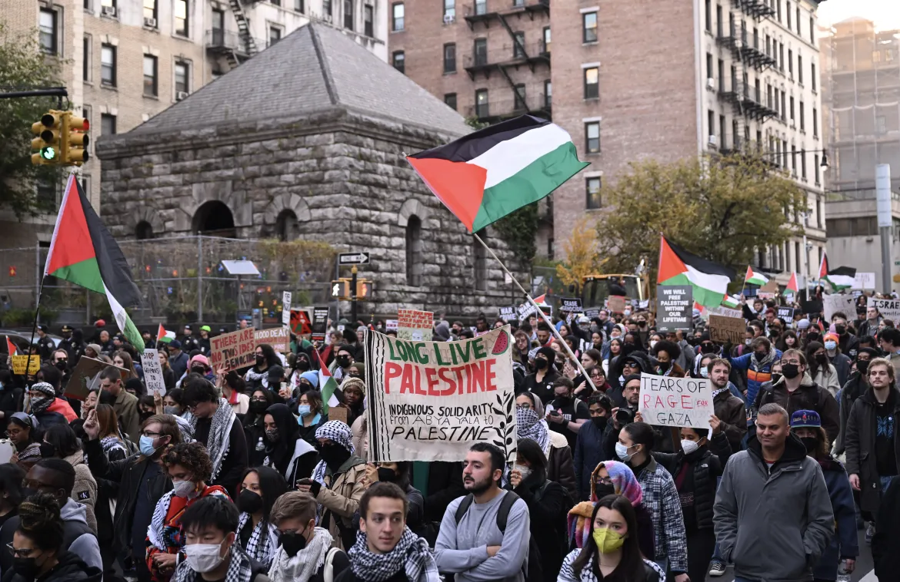
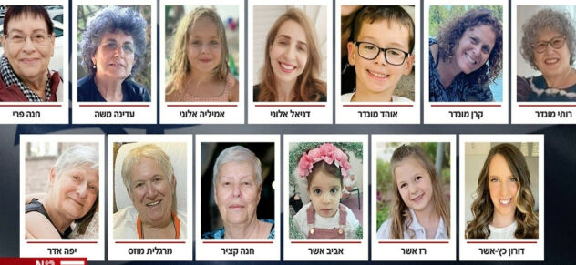
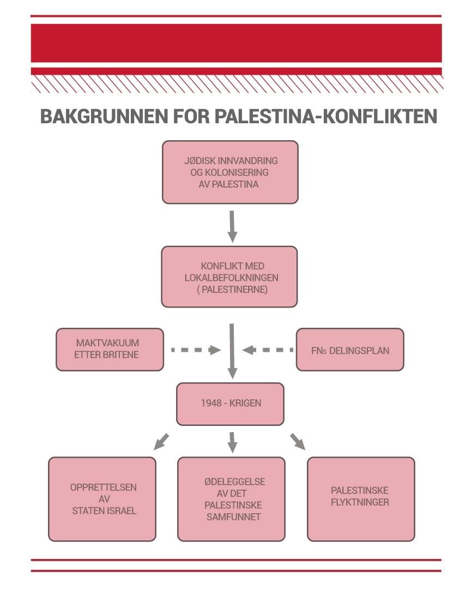

En endeløs krig
Konflikten mellom Israel og Palestina er en av de mest langvarige og sammensatte konfliktene i moderne historie.
Den er preget av religiøse forskjeller, lang historie i området og geopolitiske interesser.
Konflikten har ikke bare vært med på å forme regionen, men den har også hatt en vesentlig innflytelse over verdenspolitikken i form av involvering fra stormakter og internasjonale organisasjoner.
Denne artikkelen vil forsøke å gi et nyansert bilde av konflikten med innspill fra personer som har vært involvert, både direkte og indirekte – i nyere tid og med et historisk perspektiv.
Krigen i 2023
Krigen startet den 7. oktober i år, da Hamas lanserte en storstilt offensiv mot Israel, både med raketter og infiltratører som angrep israelske mål fra innsiden. Hamas hevdet at offensiven var et svar på Israels brudd på våpenhvilen som ble inngått i 2018, og på Israels fortsatte blokade og okkupasjon av Gaza. Israel svarte med kraftige luftangrep og artilleribeskytning mot Gaza, og hevdet at de handlet i selvforsvar og for å beskytte sine borgere mot Hamas’ terror. Israel anklaget også Hamas for å bruke sivile som menneskelige skjold, og for å forhindre levering av humanitær hjelp til Gaza.
Krigen har utløst en bølge av internasjonal fordømmelse og bekymring, spesielt fra FN, EU og menneskerettighetsorganisasjoner. FNs generalsekretær António Guterres har kalt krigen en “humanitær katastrofe” og har oppfordret til umiddelbar våpenhvile og dialog mellom partene. Han har også sagt at “lidelsene til det palestinske folk kan ikke rettferdiggjøre de forferdelige angrepene begått av Hamas, og de forferdelige Hamas-angrepene kan ikke rettferdiggjøre kollektiv straff mot det palestinske folk”.
“Det er uten tvil en humanitær krise, uansett mål er dette ikke til å tåle. Slik skal det ikke fortsette.” Sier FNs hjelpesjef Martin Griffiths under en generalforsamling om situasjonen i Gaza.

Det har vært protester og opptøyer i både Israel og de palestinske områdene, samt i andre land med store arabiske og muslimske befolkninger. Krigen har også påvirket forholdet mellom Israel og andre regionale og globale aktører, som USA, Iran, Tyrkia, Egypt og Saudi-Arabia


Hvordan er situasjoen per i dag??
Per 24/11/23 er det avtalt våpenhvile i konflikten. Dette gjør at det kan komme hjelpesendinger inn over grensen og inn på Gazastripen. Israelske Kanal 13 melder også at det israelske fengselsvesenet skal sette fri 39 personer, samtidig skal Hamas frigjøre 13 personer som ble bortført under angrepet 7. oktober.
Regjeringen.no skriver at Norge ønsker avtalen velkommen. "Norge ønsker velkommen avtalen om en midlertidig våpenhvile og løslatelse av gisler fra Gaza. Begge deler er svært viktig", sier utenriksminister Espen Barth Eide.
Våpenavtalen er ment til være i fire dager, men Israel er sier også de vil utvide våpenvil med en dag for hvert tiende nye gissel som frigis
I et intervju med NRK sier generalsekretær i flyktninghjelpen, Jan Egeland følgende: “Det er ikke en våpenhvile. Det er en kortvarig våpenstillstand, en pause, hvor man kan forsøke å få til noen humanitære ting”.
BBC meldte også at Israel løslat 39 palestinske fra fengsel.

Krigen historisk perspektiv
Konflikten har preget de siste hundre årene, spørsmålet er om de kommer til å fortsette å prege de neste hundre også eller om det er mulighet for landene å leve fredfullt side om side etter dette. Det er en rekke hendelser som har gjort at vi er der vi er i dag, og dagens aktive konflikt gjør ikke at det er noen utsikter for at dette tar slutt med det første.
Viktige konfliktpunkter
Konflikten kan spores tilbake til tidlig 1900-tallet, med en voksende sionistisk bevegelse og motstand fra det arabiske samfunnet. Sionismen er en ideologi og politisk bevegelse som gikk ut på å etablere sitt eget stat for jødene. Dette var ett svar på reaksjonen på de antisemittismen i Europa. Palestian var ikke det eneste land som ble pekt som et passende sted tilå etablere et jødisk nasjonalstat. I følge FNs artikkel ble Palestina valgt fordi jødene har røtter derfra.
Spørsmålet er hvem er det som hvem har rett til å styre og bosette seg i dette området? og hvorfor synes man at det kompleks om snakke om, men ikke om andre krig? Her skal vi ser litt på historisk perspektiv.
Delingsplanen
Den voksende sionistiske bevegelsen fra starten av 1900-tallet forsøkte å etablere et hjem for jøder i Palestina. Bevegelsen fikk videreutvikle seg, spesielt på bakgrunn av den økende antisemittismen i Europa. Videre internasjonalt press økte, og i 29.november 1947 vedtok De forente nasjoner (FN) en delingsplan for Palestina, det skulle være en jødisk og en arabisk stat.Delingsplanen gikk ut på at palestinerne som var 70% av befolkningen skulle få 44% og jødene fikk 55% av jorda, dette likte ikke palestinere men det ble akseptert av jødene.

Palestinakrigen
Palestinakrigen er delt i faser, den første- fasen i er et resultat av det motstandet av delingsplanen, krigen startet rett dagen etter FNs delingsplanen var vedtatt. og varte til 14.mai 1948. Andre fasen gikk ut var det krig mellom nabo arabiske landene vs jødene.
Krigen førte til at 750 000 palestinere mistet sine hjem. De flyket til Gazastripen, Vestbredden og Jordan, samt Libanen og Syria.Siden det har Israel nektet dem til å komme tilbake.
Det førte til også opprettelsen av staten Israel
Slide 3
This is the content of slide 3.

Slide 4
This is the content of slide 4.

skrevet:24.11.2023